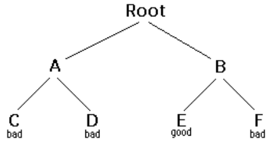

|
|
 |
|
Backtracking ia a form of recursion
the usual scenario is that you are faced with a number of options, and you must choose one of these after you make your choice you will get a new set of options, just what sete of options you get depends on what choice you made this procedure is repeated over and over untill you reach a final state .if you made a good sequence of choice your final state is a goal state; if you didnot ,it is not
conceptually,you start at the root of a tree, the tree probably has some good leaves and some bad leaves,though it may be that the leaves are all bad you want to get to a good leaf at eacg node beginning with the root you choose one of its children to move to,and you keep this up untill you get to a leaf
suppose you get to the bad leaf you can back track to continue the search for a good leafby revoking your most recent choise,and trying out the next option in that set of option.if you run out of options revoke the choice that got you here ,and try another choice at that node,if you end y\up with the node with no option left ,there are no good leavesto be found
this needs an example
in this example we drew a picture of the tree .the tree is an abstract model of the possible sequences of choices we could make.there is also data structure called a tree,but usually we dont have a data structure to tell us what choices we have.(if we do have an actual tree data structure ,backtracking on it is called depth-first tree searching.)
boolean solve(NOde n){
if n is a leaf node{
if the leaf is a goal node,return true
else return false
}else{
for each choild c of n{
if solve(c)Succeds,return true
}
return false
}
}
NOtice that the algorithm is represent in the boolean function.this essential to understand the algorithm if solve(n) is true, that means node is a part of a solution---that is. node n is one of the nodes on a path from the root to some goal node.we saya that n is solvable. if solve(n) is false,then there is no path that includes n to to any goial node.
hence to decide whether any non leaf node is solvable (part of path to the goal node),all you have to do is test whether any child of n is solvable. this is done recussively,on each choild of n,in the above code, this is done by the lines
for each child o of n{
if solve {c} succeeds,return true
}
return false
eventually the recursion wil "bottom" out at a leaf node if the leaf node is a good node it is solvable, if the leaf node is not goal node, it is not solvable this is our base case in the above code.this is done by the lines
if n is leaf node{
if the leaf is a goal node,return true
else return false
}
the backtracking algorithm is simple but important you should understand it thoroughly Another way of starting is as follows
backtracking is rther typical recursive algorithm and any recursive alagorithm be written as a stack algorithm in fact that that is how your recursive algorithm are translated into machine to assembly language
Boolean solve{Node n}{
put node n on the stack
while the stack is not empty{
if the node at the top of the stack is a leaf{
if its the good node return true
else pop it off the stack
}
else{
if thye node at the top of the stack has umtired children
push the next untired child on the stack
else pop the node out o f the stacak
}
return false
}
}
Starting from the ropot the only node that can be pushed into the stack are the childern of the node cuirrently on the top of the stack ,and these are only pushed on one childe at a time ;hence the nodes on the stack at all time describes a valid path in the tree.nodes are removed from the stack only when its is known that they have no goal among their decendents there fore
when the stack algorithm terminated successfully,the nodes on the stack form (in reverse order)a path from the root to goal Node
similarly when the recurcive algorithm finds the goal node,the path information is embodies (in reverse order) in the sequence of recurcive calls thus as an recustion unwinds
boolean solve(Node n){
if n is a leaf node{
if the leaf is a goal node{
print n
return true
}
else return false
}else{
for each child c of n{
if solve{c}succeeds{
print n
return true
}
}
return false
}
}
All pof these versions of the backtracking algorihtm are pretty simple,but when applied to a real problem, they can get pretty cluttered up with details even determining whether the node is a leaf can be complex
for example, if the path represents a series of moves in a chess end game problem,the leaves are the checkmate and statement solution
to keep the programming clean, therfore, tests lie this should be buried in method,ina chess game,for example you could tests whether a node is a leafa by writing a game Over method(or you could even call itisleaf).this method would encapsulate all the ugly details of figuring out hether any possible moives remain
Notice that the backtracking algorithm require us to keep track,for eacch node on the current path,which of its children have been tried alredy (so we dont have to try them again).in the above code we made this look simple,by just saying for each child c of n in reality,it may be difficult to figure out what the possible children are,and there may be no obvious way to step through them in chess for example .a node can represents one arrangements of peices on a chessboard,and each child of that node can represents the arrangemnt after some piece has made a legal move how do you find thses children and how do you keep track of which ones you have alredy examined?
the most straightforward way to keep track of which children of the node have been tired is as follows:upon initial entry to the node(that is, when you depth-firstget there from above), make a list of all its children ,As you try ac child,take it off he list,when the list is empty,thetre are no remaining untried children ,and you can returnn "failure".this is a simple approach,but it may require quite a lot of additional work
there is an easier way to keep track of which children have been tried ,if you can define ordering on the children.if there is an ordering,and you know which child youjust tried ,you can detremined which children to try to next
for example, you might be able to number the children 1 through n,and try them innumerical order.then if you have just tried child k you know that you jhave already tried children 1 throough 1 through k-1,and you have not yet tried children k+1 through n.or,if you are tryiong to color a map with just four colors, you can always tryred first,then blue. if child yellow fails, you know to try child green next. if you are searching a maze,you can try choices in order left,straight,right(or perhaps north,east,south,west).
it is not easy to find a simple way to order the cildren of a node.in the chess game example,you might number your pieces (or perhaps the squares of the board) and try them in numerocals order; but in addition each piece may also have severalsmoves and theses must also be ordered
for starters,lets do the simple possible examples of backtracking,which is searching an actual tree.we will alsi use the simplest kind of tree,binary tree
A binary tree is the data structure composed of nodes .one node is designated as theroot.each node can reference (point to )zero,one or two other nodes,which are called its cildren its children the children are referredd to as the left child and or the right child all nodes are reachabke(by one or more steps)from the rrot node,and there are no cycles for our purposes,although this is not part of the definition of a binary tree,we will stay that a node might or might or might not be a goal node,and will contain its name.the first example in this paper(which we repeaat here)shows a binary tree
here's a definition of the binary tree class:
public class binary tree{
binary tree left child=null;
binary tree right child=null;
boolean isGolanode=false;
String name;
BinaryTree(String name,BinaryTree left,binary Tree right,boolean isGoalNode){
this.name=name;
leftchild=left;
rihtchild=right;
this.isgoalnode=isgoalnode;
}
}
next we will create a tree search class,and in it we will define method make tree()which construct the above bonary tree.
staticBinaryTreeMakeTree(){
BinaryTree root,a,b,c,d,e,f;
c=new BinaryTree("C",null,null,false);
d=new BinaryTree("D",null,null,false);
e=new BinaryTree("E",null,null,true);
f=new BinaryTree("F",null,null,false);
a=new BinaryTree("A",c,d,false);
b=new BinaryTree("B",e,f,false);
root=new BinaryTree("root",a,b,false);
return rpot;
}
Here's a main program to create a binary tree and try to solve it:
public static void main(String args[]){
Binary Tree tree=make tree();
Syatem,oput.println(solveable(tree));
}
And finally ,here;s the recuesive backtracking routine to"solve" the binary tree by findoing a goal node.
static boolean solvable(binalry Tree node){
/*1*/if(node==null)return false;
/*2*/ if (node.isGoalNode)return true;
/*3*/if (solvable(node.leftChild))return true;
/*4*/if (solvable(node.rightChild)) return true;
/*5*/return false;
}
hers's what the numbered lines are doing:
this program runs correctly and produces the unenlightening resukt true.
Each time we ask for another node,we have to cheack if it is null.in the above we put that check as the first thing in solvable .An alternative would be to check first whether each exists,and recur only if they do.here's that alternative version:
static boolean solvable(binaryTree node){
if(node.isGoalNode)return true;
if(node.leftchild !=null&&solvable(node.leftchild))return true;
if(node.rightchild!=null&&solvable(node.rightchild))return true;
return false;
}
i think the first version is simpler ,but the second version is slightly moree efficient.
one of the things that simplifoes the above binary tree search is that, at each choice point,you can ignore all the previous choices.prvious choices don't goive you any onformation about what you should do next; as far as you lknow,bith the left and the rigth child are possibble solutions.in many problem,however,you may be able to eliminate children immedaitely,without recursion
Consider ,for example ,the problem of four-coloring a map .it is theorem of mathematics that any map on a plane,no matter how convoluted the countries are,can be coloredd woth at most four coplors, so that no two countries that share a border are the same color.
to color a map,you choose a color for the forst county then a color for the second country,and so on,untill all countries,are colored.
there are two ways to do this:
let's apply each of these method to the problem of coloring checkerboard.this should be easily solvable; after all,a cheackboard only needs two colors
used by method 1 to check (at a leaf node)whether the entire map is colored correctly.
used by method 2 cheack,at every node,whether there is an adjacent node already colored with the given color.
Used by both methods to find the next "country" (actually,the row and column of the next square on the checkerboard).
here's the code for method 1:
boolean explore1(int row,int color){
if(row>=NUm_ROWS)return mapIsOk();
map[row][column]=color;
for(int nextcolor=RED; nextColor<=BLUE; nextolor++){
int[]next=nextRowAndCOLumn(row,coloumn);
if(explore1(next[0],next[1],nextColor))return true;
}
return false;
}
And here's the code for method 2:
boolean explore2 (int row,int column,int color) {
if(row >=NUM_ROWS)return true;
if(okToColor(row,column,color)){
map[row][column]=color;
for(int nextColor=RED; nextColor<=Blue;nextColor++){
int[]next=nextRowAndColumn(row,column);
if(explore2(next[0],next[1],nextColor)) return true;
}
}
return false;
}
those appear pretty similar,and you might think they are eqaully good.however;the timing information suggests otherwise:
| 2 by 3 map | 3 by 3 map | 3 by 4 map | |
|---|---|---|---|
| Method 1: | 60 ms. | 940 ms. | 60530 ms.(1 minute) |
| method :2 | 0 ms | 0 ms | 0 ms |
the zeros in the above table indicate times too short to measure (less than 1 mili second).why this huge difference? Either of thses methods could have exponential growth. Eliminating a node automatically eliminates all of its descendents ,and this will often prevent exponential growth .Eliminating a node automatically eliminates all of its descendents,and this will often prevents exponential growth.conversely,by waiting to cheack untill a leaf node is reached exponentail growth is practucally guaranteed.if there is any way to eliminate children(reduce the set of choices),do so! eliminating a node automatically
often our first try at a program doesn't work,and we need to debug it. debuggers we need to fall back on inserting print statement. there are some simple tricks to making effective use of statements.these tricks can be applied to any program,but are especially usefull when you are trying to debug recursive routines.
often ,the best debugging technique is to print every method call and return(or at least the most important ones)you probably want to print,for each method,what parameters it came in with,and what value it leaves with ,however,if you just print a long list of these,its hard to match up method exists with their corresponding entries indenting to show the level of nesting can help.
Don't clutter up your actual code more than you must.also,remeber that code inserted for debugging purposes can itself contain bugs,or(in the worst case)can affect the result ,so be very carefull with it
here's our debugging code.for this tivial program,there's almost more debiugging code than actual code,but in larger programs the proportions will be better
static String indent="";
static Strung name(BinaryTree node){
if(node==null)return null;
else return node.name;
}
static void enter(binaryTree node){
System.out.println(indent+"Entering solvable("+name(node)+")");
indent=indent+"|";
static boolean yes(binaryTree node){
indent=indent.substring(3);
System.out.println(indent+"solvable("+name(node)+")return true");
return true;
}
static boolean no(binaryTree node){
indent=indent.substring(3);
System.out.println(indent+"solvable("+name(node)+")returns false");
return false;
}
}
To use this code, we modify solvable as follows:
static boolean solvable(binaryTree node){
enter(node);
if(node==null)return no(node);
if(node.isGoalNode)return yes(node);
if(solvable(node.leftchild))return yes(node);
if(solvable(node.rightchild))return yes(node);
return no(node);
}
And we get these results:
Entering solvable(Root)
| Entering solvable(A)
| | Entering solvable(C)
| | | Entering solvable(null)
| | | solvable(null)returns false
| | | Entering solvable(null)
| | | solvable(null) returns false
| | solvable(C) returns false
| | Entering solvable(D)
| | | Entering solvable(null)
| | | solvable(null) returns false
| | | Entering solvable(null)
| | | solvable(null)returns false
| | solvable(D) returns false
| solvable(A) returns false
| Entering solvable(B)
| | Entering solvable(E)
| | solvable(B) returns True
solvable (root)returns True
true
writing debugging statements is programming too.often its as much as work to debug the debugging statements as it is to debugthe actual program.once your program is working,why throw this code away?
Obviously,you dont want to print out all thus debugging information form a program you are ready to submut (or to turn over to your manager)you could comment out your debugging calls,but that can be lot of work,whats more,in the above example you would have to replace evry return(yes(node))with return(true),and evry return(no(niode)) with return false with all thesechanges you might introduce new bugs into your programs
the simple solution is to make your debugging statemnts conditions for example
static final boolean debugging=false;
static void enter(binaryTreeniode){
if(debiugging){
System.out.println(indent+"entering solvable("+name(node)+")");
indent=indent+"|";
}
}
static boolean yes(BinaryTree node){
if (debugging){
indent=indent.substring(3);
System.out.println(indent+"solvable"+name(node)+") returns true");
}
returns true;
}
static boolean no (BinaryTree node){
if (debugging){
indent=indent.substring(3);
System.out.println(indent+"solvable"+name(node)+") returns false");
}
returns false;
}
}
in industry actual programs often have multiple flags to control different aspects of dedbugging Don't worry too much about making your code larger ,modren compilers will notucx taht since variable debugginh is final,it can never be true controlled code wil be discarded.
if an exception is thrown ,you can get infiormation about just where it happened by sending i the message print stackTrace(printstream) scine exception ia an object like any other you can create and throew your own exception however java programming dont always realize that you can crerste an exceptions with out throwing it for example the following code
new Exception{"checkpoint Charlie"}printStackTrace{System.out};will print out a messagee something like thus,and the program wil then copntinue normally tyhat is the abovecode just acts like a print statemnt
java.lang.excepptionn;Checkpoint charlie
at TreeSearch.solvable(TreeSearh.java.53)
at TreeSearch.solvable(TreeSearh.java.57)
at TreeSearch.solvable(TreeSearh.java.72)
at_SHEll38.run(__SHELL38.java:16)
at bluej.runtime.excServer.suspenfExcution(Unknown Source)
i call the following puzzle " Cindy puzzle" for historical reason.you have some numbers n of black marbles and the same numberof white marbles and white marbles,and you playing board whihc consists simply of a lineof 2n+1 spaces to put the marbles in.start withh the black marbles all at one end(say,the left)the white marbkes all at the other end,and a free space in between
| |
|
|
|
the goal is to reverse the positions of the marbles :
| |
|
|
|
The black marbles can only move to the right,and the white marbles ,and the white marbles can only move to the left{no backing up} At each move, a marble can either:
Fpr example,you could make the following sequence of moves
| Starting position : |
|
|||||
| Black moves ahead : |
|
|||||
| white jumps: |
|
|||||
| Black moves ahead: : |
|
|||||
| Black jumps : |
|
|||||
| white moves ahead : |
|
|||||
| stuck! |
The backtracking method is named solvable and returns a boolean. In solvable we shall need to check whether we are at a leaf, which in this case means a position from which no further moves are possible.this is n't easy.
Now to the program.the main program will initialize the board,and call a recursive backtracking routine to attempt to solve the puzzle.the backtracking routine wil either succeed and print out a winning path,or it will fail,and the main program will have to print out the bad news
the backtracking method is named solvable and returns a boolean.in solvable we shall need to check whether we are at a leaf,which in case means a positions from whihc no further moves are possible.this isn't so easy.
Each Possible move will result in a new board positions,and these new board position are thechildren of the current board position.Hence to find the children of a node(that is,ofa a board position),we need only find the possible moves from that node. Remember that it is also highly desirable to find an ordering on these possible moves.
Here it is time to stop and take thought.to make progress,we must analyze the game to some extent.probably a number of approaches would work,and what follows is based on the way i worked it out if you were to program this puzzle,you might find a different but equally valid approach.
First,notice that if a marble has a move,that mive is unique if it can move ahaead one square,then it cannot jump.if it can jump, it cannot move ahead one square.this suggests that to find the possible moves,we might assign numbers to the marbles,and check each marbles in turn.when we have loked at all the matrbles,we have looked at all possible moves.this would require having a table to keep track of where each marble is,or else somehow "marking"each marble with its number and searching board each time to find the marble we want.neither alternative is very attractive.
Next,Notice that for a given board position,each marble occupies a unique space.hence,instead of talking about moving a particular marble,wecan talk about mobing the marble in a particular apace.if a move is possible from a given space,then that must b the only move possible from that space,because if the marble in that space has a move,it is unique.there is a slight complication because not every space contains a marbles,but at least the space has move,it is unique there is a slight complication because not every space contains marble,but at least the space(unlike the marbles) stay in one place.
Now we have a simpler ordering of moves to use in our program.just check,in order,the 2n+1 spaces of the board.for each space,either zero or one moves is possible.with this understanding ,we this understanding,we can write a boolean method canMove(int[]board,int position)which determines whether a move is possible from the gien possible:
we write another method int[] makeMove(int[]oldBoard,int positon) that will take a board and a position,make a move from that position,and return as its value a new board.(WE could) write this somewhat more efficiently by changing the old board, rather than creating a new one,but here we more concerned with simplicity.) in technical jargon,makeMove is "applicative" rather than "mutative."
Along with canMove and makeMove, we are using methods puzzle Solved and printBoard with meaning that should be obvious.
boolean solvable(int[] board){
if(puzzleSolved(board)){
return true;
}
for(int position=0;position < BORD_SIZE; position++){
if(canMove(board,position)){
int[] newBoard=makeMove(board,position);
if(solvable(newBoard)){
printBoard(newBoard);
return true;
}
}
}
return false;
}
Aalong with canMove and makeMove,we are using methods puzzleSolved and printBoard with menaings that should be obvious.
here is some output from the program:
16. WHITE WHITE WHITE _______ BLACK BLACK BLACK
15. WHITE WHITE WHITE BLACK ______ BLACK BLACK
14. WHITE WHITE ______ BLACK WHITE BLACK BLACK
13. WHITE ______ WHITE BLACK WHITE BLACK BLACK
12. WHITE BLACK WHITE ______ BLACK BLACK BLACK
11. WHITE BLACK WHITE BLACK WHITE _____ BLACK
10. WHITE BLACK WHITE BLACK WHITE BLACK _____
9. WHITE BLACK WHITE BLACK _____ BLACK WHITE
8. WHITE BLACK ______ BLACK WHITE BLACK WHITE
7. _____ BLACK WHITE BLACK WHITE BLACK WHITE
6. BLACK _____ WHITE BLACK WHITE BLACK WHITE
5. BLACK BLACK WHITE _______ WHITE BLACK WHITE
4. BLACK BLACK WHITE BLACK WHITE ______ WHITE
3. BLACK BLACK WHITE BLACK ______ WHITE WHITE
2. BLACK BLACK ______ BLACK WHITE WHITE WHITE
1. BLACK BLACK BLACK ________ WHITE WHITE WHITE
Notice that the solution is given in reverse order: Black starts out on the left and WHITE on the right,as in the last line i've added line numbers to the actual output in order to emphasize this is point.backtracking always produces its results(sequence of choioces)in reverse order;it is up to you, the programmer, to reverse the results again to get them in the correct order.